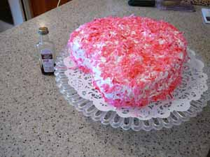

Mom bakes a Valentine's Day cake
When I was growing up we got to pick our dinner menu on our birthdays. I usually chose barbecued spareribs, twice-baked potatoes, that awful green bean casserole with the canned onion rings on top, and a yellow cake frosted with seven minute icing, sprinkled with coconut. Except for the green beans that still sounds like a pretty good menu to me!
What’s more, Mom often made the same cake, in heart-shaped pans, for Valentine’s Day, tinting the frosting pink, so I got to eat my favorite cake twice in a month. Some might find this cake too sweet, but I like the way the frosting highlights the buttery flavor of the cake, rather than overwhelming it the way a chocolate icing would. On the other hand, I’ve got a pretty sweet tooth, and used to be fond of those sugar wafers with white frosting in the middle, the sort of crisp waffle ones.
Well, as you know, Leland baked me a chocolate cake this year, so I took it upon myself to make the Valentine’s Day cake. Instead of tinting the seven-minute frosting, I tinted the coconut. In case you don’t know how to do that, here’s what you do: put a handful of shredded coconut in a jar or container with a lid (I used a big cottage cheese container). Add a capful or 1/4 teaspoon of red food coloring (yes, you can use the paste but start with less, you can always add more). Attach lid tightly and shake vigorously. Remove lid and look at coconut. If it is the color you want you are all set. If it’s too light add more color; if it’s too dark, add more coconut and repeat shaking.
Anna’s Swedish Butter Cake, from A Piece of Cake, by Susan G. Purdy

- 2 cups plus 2 tablespoons sifted all-purpose flour
- 1 teaspoon baking powder
- 1/4 teaspoon salt
- 1 cup (2 sticks) salted butter
- 1 1/2 cups sugar
- 2 large eggs
- 3/4 cup milk
- 1 teaspoon vanilla extract
1. Prepare pans by greasing and flouring. This recipe makes one 9-inch tube pan or one 2-layer 9-inch cake, to serve about eight people. Position rack in center of oven and preheat oven to 350ºF.
2. Sift or whisk together flour, baking powder, and salt. Set aside.
3. With a wooden spoon in a mixing bowl or an electric mixer, cream together the butter and sugar until smooth and well blended. Add the eggs, one at a time, beating well after each addition. Alternately add the dry ingredients and the milk, beginning and ending with the flour. Scrape down the sides of the bowl and the beaters. Add the vanilla.
4. Spoon the batter into the prepared pan(s), level the top, then spread the batter toward the pan edges. Bake in the preheated oven for 55-60 minutes for the tube pan, 30-35 minutes for layers, or until the top is golden and a cake tester inserted in the center comes out clean. Cool the cake in its pan on a wire rack for about 10 minutes, then run a knife around the edge of the cake. Top with another rack or plate, invert, and lift off the pan. Cool the cake completely before sifting on confectioner’s sugar or frosting.
Seven-Minute Icing
- 2 large egg whites
- 1 1/2 cups sugar
- 1/3 cup cold water
- 2 teaspoons light corn syrup
- 1 teaspoon vanilla extract
1. Combine all ingredients except the vanilla in the top part of a double boiler set over boiling water. Immediately begin beating with a whisk or hand-held electric mixer. If using the mixer, start at medium-low speed for the first 4 minutes, then increase to high for the remaining 3 minutes. With a whisk it can take up to 13 or 14 minutes. Whip until the icing is a satiny foam that holds very soft peaks and mounds on the beater.
2. Remove pan from the heat, stir in the vanilla, then beat hard for 1 full minute longer, or until the icing is a little thicker. Spread on the cake at once. After it air dries, the outer surface will lose its stickiness but the inside will remain soft. Don’t ice cakes with this more than 6 hours in advance, because the frosting tends to become granular after long standing.
3. For the Valentine’s cake, sprinkle coconut on frosting immediately, while still sticky. Also, place strips of wax paper under edges of cake before frosting. They will catch drips and spills and can be removed before serving cake.
Comments
That’s a festive looking cake.
That cake recipe is a favorite of mine, I generally use it when I need to make a “plain” cake. Of course it is far from plain…lovely.
Add a comment